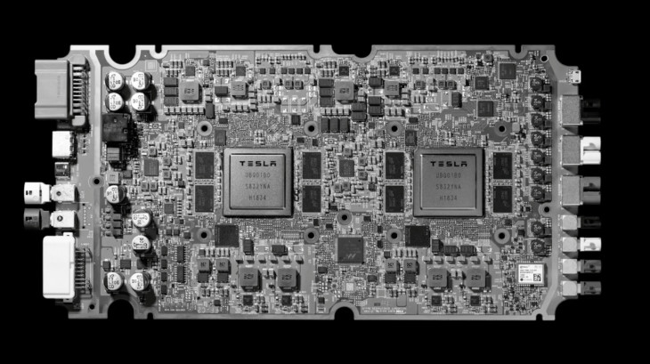
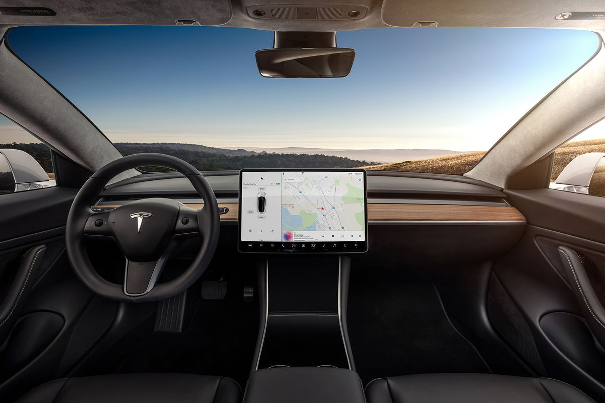

Tesla Car Software Failure
"We really deigned the Model S to be a very sophisticated computer on wheels" -Tesla CEO Elon Musk
But he forgot to mention they run on Linux and so they need a lot of logging. The main issue is that the excessive log file writing causes eMMC flash wear. Flash memory is generally only rated for some tens of thousands of write cycles. What happens is that the flash memory starts to fail when writings can no longer be completed. Each memory bit on a flash chip can only be written to a limited number of times before data gets corrupt – and that bit can no longer reliably store a 0 or a 1. When one block fails, parts of the firmware may also become unreadable, leading to poor operation or failure of the MCU completely.
Every Tesla Model S and Model X created up to 2018 has an MCU, or Media Control Unit Version 1, also called MCUv1. WHen it fails the car loses important festures controlled by the touchscreen. This failure derives by the Architecture of the CPU: Tesla soldered the 8 GB eMMC flash memory chip to the same boeard of the CPU. For that reason now the dirmware is competing with logs for space on the eMMC chip. As a conseguence of this failure, the touchscreen of Tesla could shut down without notice before and it could make driving dangerous. The eMMC flash chip architecture attempts to mitigate this problem using a wear-leveling technique. It spreads out write operations over the entire chip on unused sections of the flash memory to ensure that specific bits are not written to very often, essentially avoiding the write limitation. But here there is another problem because if data changed on the chip too often and in large quantities, wear-leveling can only do so much and at one point data strarts to get corrupt. You can either lose data or core functionality can start to fail depending on where the corruption occurs
Solution
The only way to remedy at this failure is to replace the whole MCU. If your car is still in warranty period, that is for free. If coverage is no longer valid you will have to pay the bill. A replacement isn't cheap. It affords from $700 to $5000.